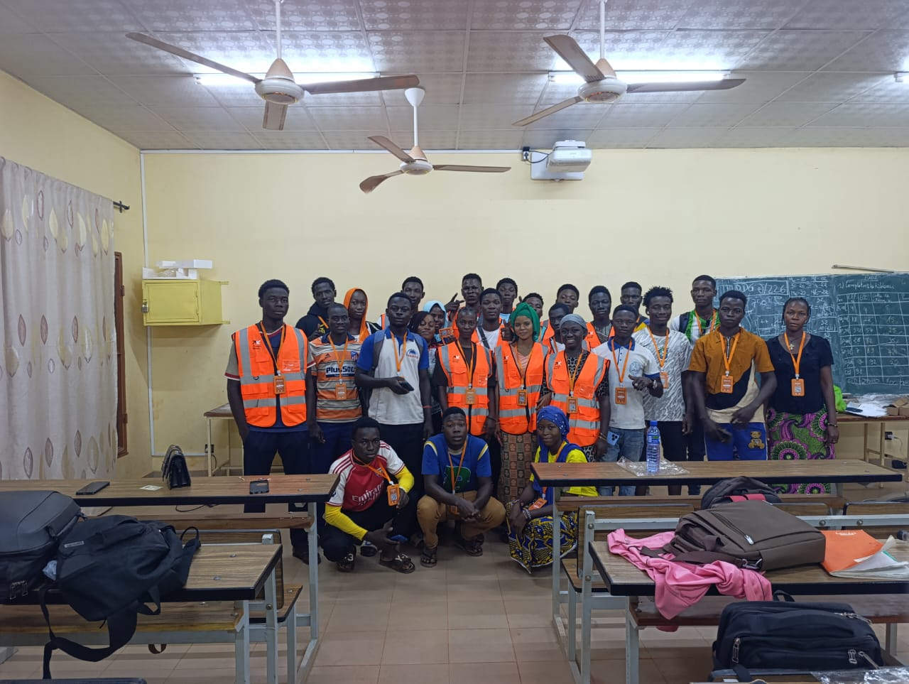
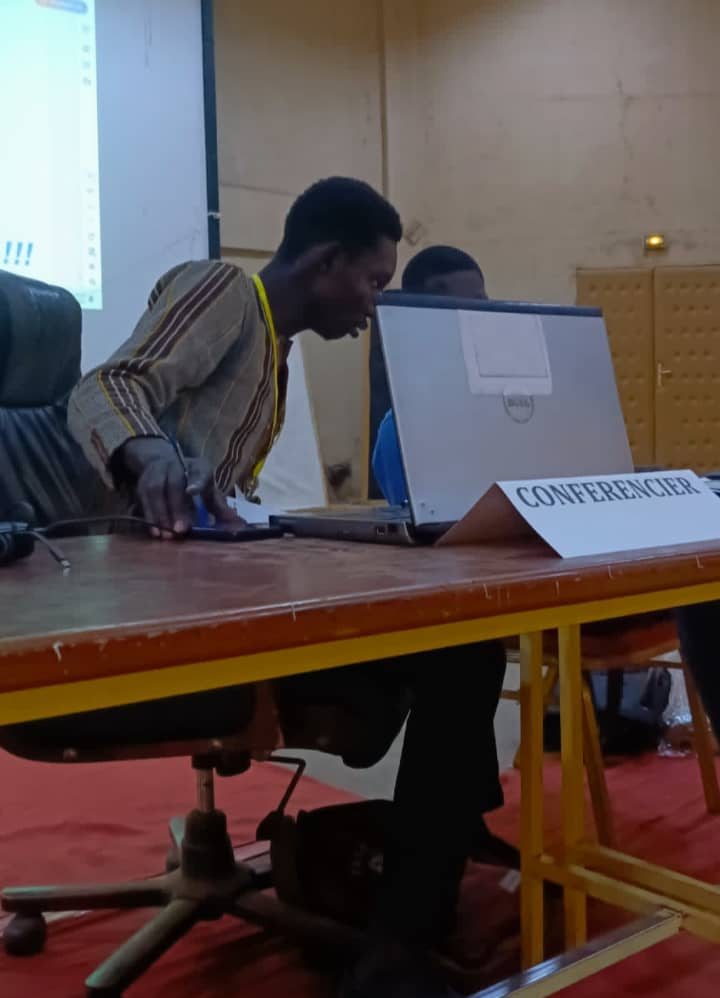
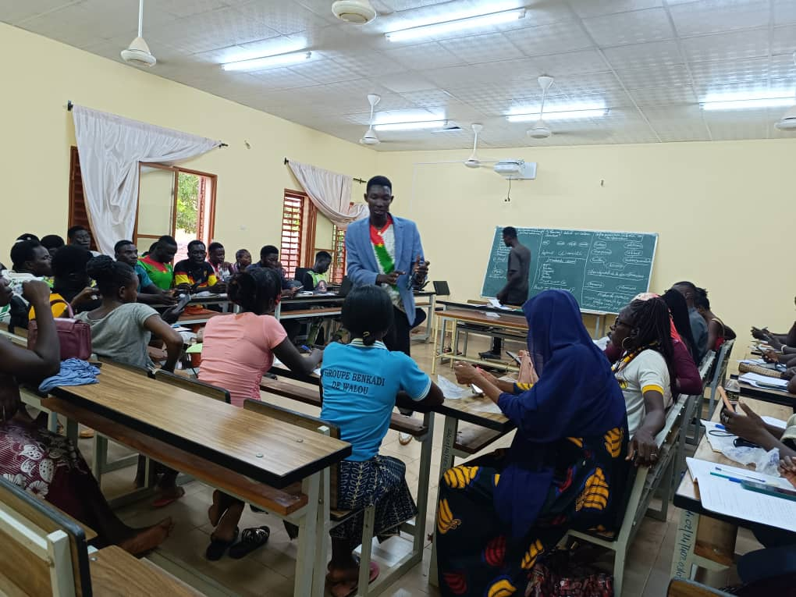
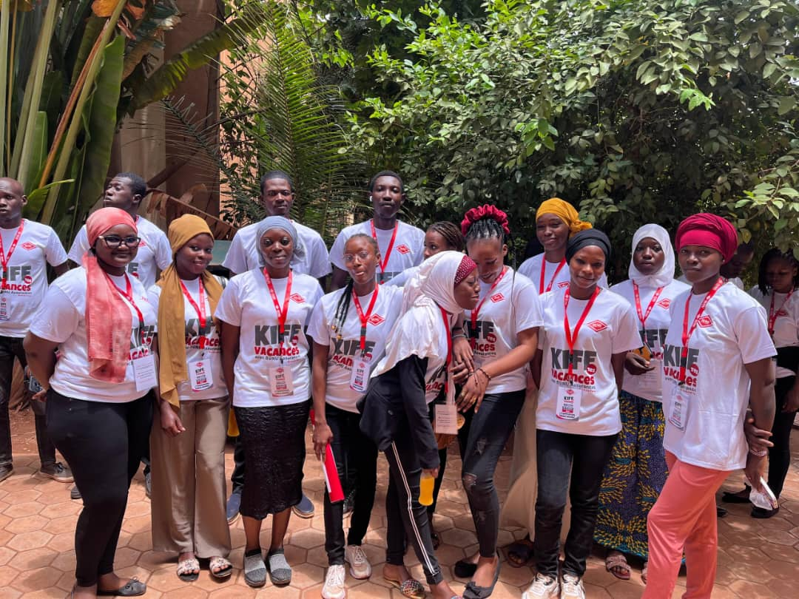

Galerie Photos
Quelques clichés qui témoignent de mes activités, conférences et engagements.





Sociologue, Entrepreneur & Leader Activiste Burkinabè. Bâtir le présent par l'innovation et la connaissance. **THURA BOSS** dans l'âme.
🤝 Proposer une collaborationDiplômé en **Environnement et Innovation Agricole**. Cette expertise me permet d'analyser les systèmes complexes et de proposer des solutions durables pour le développement du Burkina Faso.
Consultant au **Bureau Géographique du Burkina (BGB Méridien)**. Mon rôle est d'apporter une vision stratégique et des données fiables pour l'aménagement du territoire et la prise de décision éclairée.
Spécialisé en **Désinformation et Journalisme de Solution**. J'interviens pour sensibiliser et former aux enjeux médiatiques modernes et à la construction de narratifs positifs.
En tant que Conseiller à **SUNU ASSURANCES VIE Burkina**, j'accompagne les particuliers et entreprises dans la sécurisation de leur avenir financier avec des produits d'assurance sur-mesure.
Manager de réseau chez **Orange Dédougou**. Je suis garant de la performance, de l'expansion du réseau et de l'excellence du service client dans ma zone.
Créateur et PDG de la marque de Pull-over **"TH"**. Une fusion entre la mode moderne et l'identité Burkinabè, symbolisant l'ambition et la qualité locale.
Président de la **Coopérative de production et de transformation d'eau en sachet plastique** à l'Université Daniel Ouezzin COULIBALY. Un engagement pour l'hygiène et l'entrepreneuriat étudiant.
Président de l'Association à but non lucrative **Jeunesse, Santé, Vie (JSV)**. Notre mission : promouvoir la santé et l'épanouissement des jeunes au Burkina.
Un engagement constant pour la citoyenneté active et le changement positif. J'utilise ma voix et mes plateformes pour mobiliser et sensibiliser.
Ancien Délégué de promotion et Président du **Club CNTS de l'Université de Dédougou**. Une expérience solide en gestion d'équipe et représentation estudiantine.
Suivez mon actualité, mon business, et ma musique en temps réel sur toutes mes plateformes sociales.
"Au-delà du costume de consultant et d'entrepreneur, je suis **Artiste musicien Burkinabè** déclaré au Bureau Burkinabé des Droits d'Auteur (**BBDA**). Ma musique est un écho de mon engagement social et une source d'inspiration."
🎧 Écouter THURA BOSS (TikTok)Consultez la section Réseaux Sociaux pour plus de plateformes !
Intéressé(e) par une collaboration, une conférence ou un partenariat ? Contactez-moi directement.
Quelques clichés qui témoignent de mes activités, conférences et engagements.